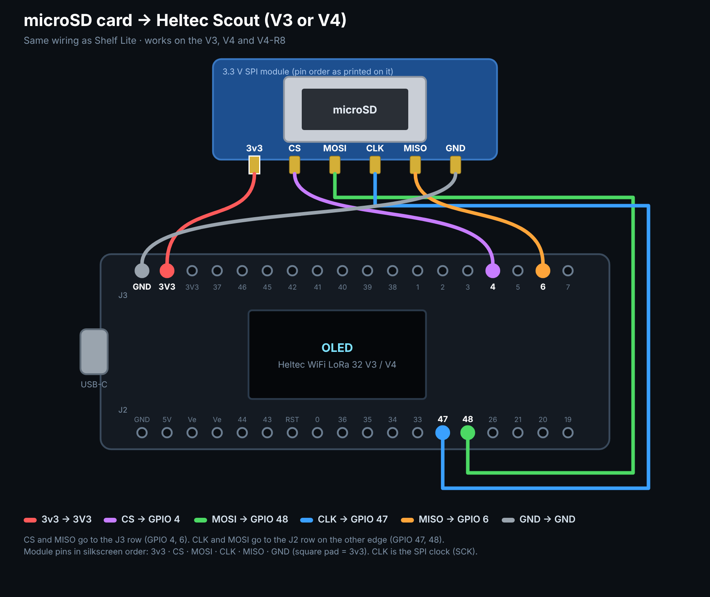

A Wi-Fi thumb drive that also logs every Wi-Fi network, Bluetooth device, LoRa packet and 900 MHz signal it hears. Install it, pull the logs, then see it all on a map.
Plug the board into this computer with a USB-C data cable, pick your board, then choose the serial port when Chrome asks. Works in Chrome or Edge on a PC, Mac or Raspberry Pi.
No card fitted? It logs to about 5.9 MB of the board's own flash instead.
Turns on the V4's receive amplifier for better LoRa range. Uses the GPS port if the GNSS kit is plugged in.
No port listed? On the V3, hold PRG, tap RST, let go of PRG and try again. The V4 shows up right away. On Windows the V3 may need the free CP210x USB driver.
Same wiring as Shelf Lite, so a board you already wired for that works as-is.

| Module pin | Heltec pin |
|---|---|
| VCC | 3V3 (not Ve) |
| GND | GND |
| CS | GPIO 4 |
| MISO | GPIO 6 |
| CLK (SCK) | GPIO 47 |
| MOSI | GPIO 48 |
Use a FAT32 card (32 GB cards come that way). Scout stops logging with 8 MB left, so the card never fills solid.
| GPS pin | Heltec pin |
|---|---|
| VCC | 3V3 |
| GND | GND |
| TX (data out) | GPIO 39 |
| RX | GPIO 38 |
Any 3.3 V NMEA module at 9600 baud (NEO-6M, L76K…). On the V4 just plug in the Heltec GNSS kit. No GPS? Studio estimates locations afterwards (see Get data).
It cycles through five screens on its own: Drive (hotspot, storage, clock, GPS) → Wi-Fi → Bluetooth → LoRa → 900 MHz (a live spectrum of 902–928 MHz). Everything is logged to the card the whole time, whatever screen is showing.
| PRG once | Screen to sleep / wake (logging keeps going) |
| PRG twice quickly | Jump to the next screen |
| PRG held 3 s | Asks Reboot? Press PRG once to reboot (logs are kept). Leave it alone and it goes back after 8 s. |
| RST | Instant restart (it's wired to the chip's reset line, so the software can't use it) |
Join the Scout-XXXX Wi-Fi (password heltecscout). The page opens by itself, or go to http://192.168.4.1. Upload, download and delete files, watch the scanners live, download logs and change settings. Opening that page also sets the board's clock from your phone.
Every power-up is a new session folder, /scout/s0001, s0002… holding wifi.csv, ble.csv, lora.csv, rf900.csv, gps.csv and events.csv. Plain CSV, so Excel opens them too.
Plug it in and pull sessions straight off the card. Also sets the board's clock from this computer.
A .scout file from the board's web page, the CSV files, or the whole scout folder from the card in a card reader.
No board yet? Load a made-up 40-minute drive with Wi-Fi, Bluetooth, two Meshtastic nodes and meter-style 900 MHz hopping.
The board learns the time from GPS, from your phone opening its page, or from this page over USB. Rows logged before that are back-dated automatically. If a session never got the time, type when it started.
Rows get a location from the first of these that has one: board GPS → phone track → Wi-Fi estimate → the board's fixed spot setting → a pin you drop.
Record a GPX track on your phone while the Scout rides along (on iPhone, apps like Open GPX Tracker do this), then load it here. Matched by time.
Looks up where the Wi-Fi networks in each scan are, like a phone does without GPS. Sends only the network addresses to the service you pick.
For a session that sat in one place (on a desk, in the car at work). Type a spot, or tap Pick on map.
Packets on the public LongFast channel are decoded automatically (node names, positions, text). Add your own channel's name and key (from the Meshtastic app's channel QR / share link) to decode those too. Keys stay in this page.
Phones and AirTags change their Bluetooth address every 15 minutes or so, so one gadget can show up as a few rows. "Followed you" means the same address kept showing up over 20+ minutes while you moved several hundred meters.
Signals spread evenly across the whole band are usually frequency-hopping gear: smart electric/gas/water meters, wireless sensors, cordless phones. A few fixed spikes are usually LoRa, Meshtastic or other single-channel devices.
Wi-Fi and Bluetooth with locations, ready to upload to wigle.net or open in mapping apps.
All sessions combined, with real times and filled-in locations. LoRa includes decoded Meshtastic fields.
Route, estimated Wi-Fi spots and Meshtastic nodes for Google Earth, QGIS or geojson.io.
Heltec Scout · works with the Heltec WiFi LoRa 32 V3 and V4 · part of the Heltec family alongside Shelf Lite, Heltec-C64 and Heltec-Mac · source on GitHub